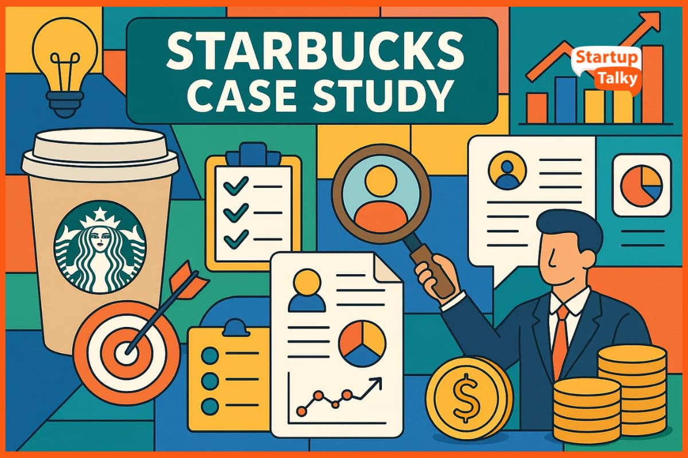

Manager Internship in the Field
Welcome to my home page! As part of my internship, I am now working in the field as a Store Manager at Starbucks. Managing store operations and floor flow gives me great leadership experience.

Welcome to my home page! As part of my internship, I am now working in the field as a Store Manager at Starbucks. Managing store operations and floor flow gives me great leadership experience.

Balancing active shift management in the store with my studies is challenging, but the joy of continuous learning keeps everything in balance.